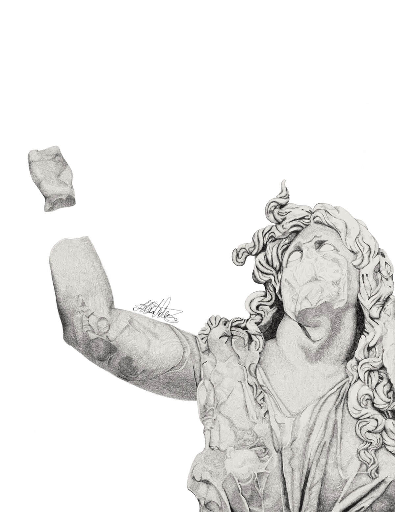
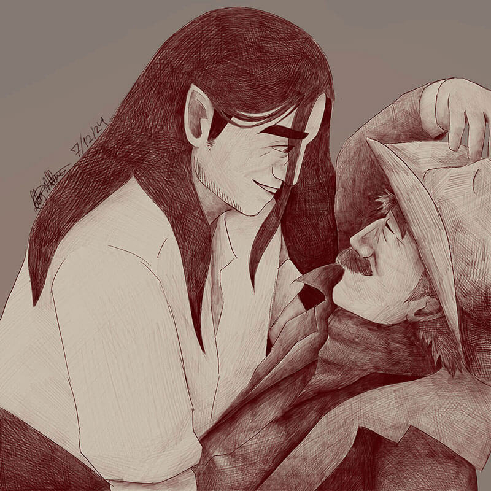
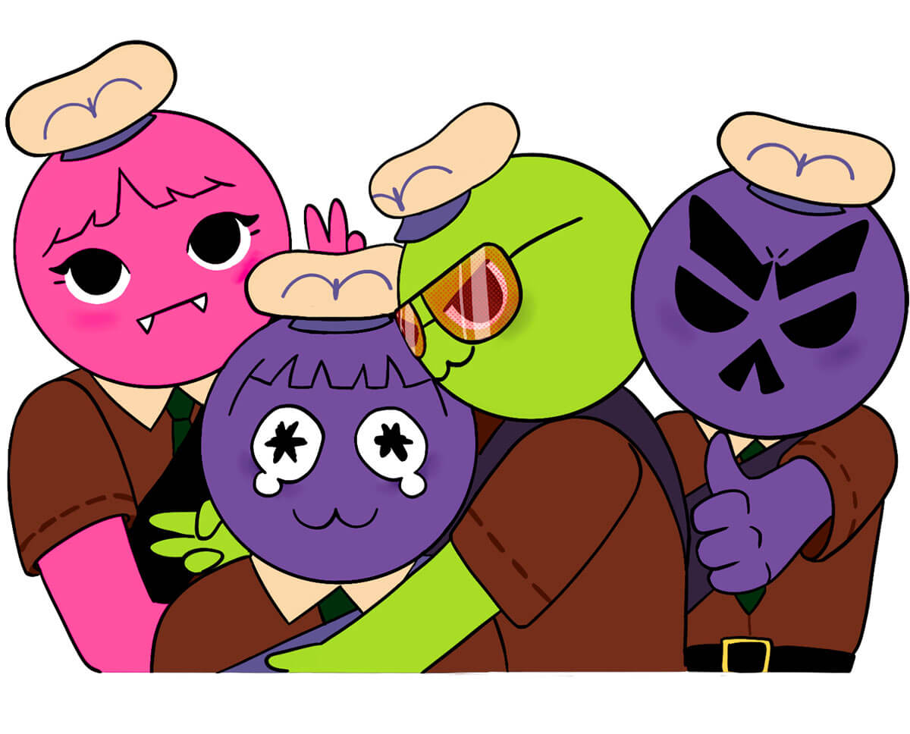

About Me
Hello, my name is Lily Wilber (they/them) and I am a senior in the Digital Media Arts BFA program at San Jose State University.
My Work

Gaia
This piece is a digital drawing recreating one of the relief sculptures on the Pergamon Altar, this was made for my older siblings Senior Poetry Manuscript about women in mythology.

A Perfect Pair
This piece is of my two original characters from the novel I am working on, it was used as the poster image for the gallery I did about them in February 2026.

Sheriff Casey
This piece is meant to resemble the look of tin type portraits, I created a version of it on metal using an image transfer method and it was displayed in the gallery I did about my original characters in February 2026.

A Peak Group
This piece is one side of an arcylic keychain design I am working on that contains the Peak characters of myself and my three friends as a way to commemorate how much fun we had playing the game together over the summer.
Contact Me
Email: lily.wilber@sjsu.edu